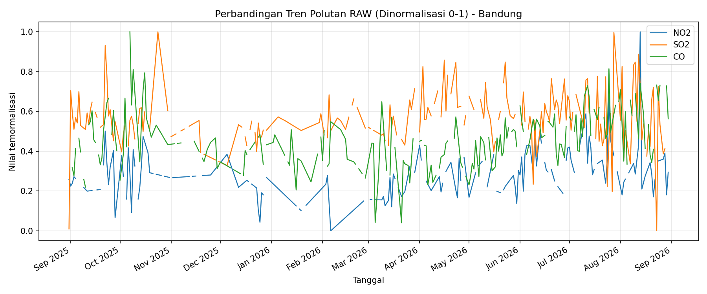
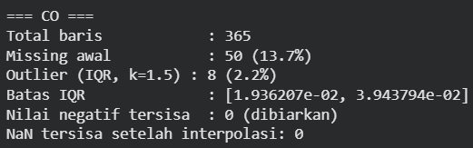
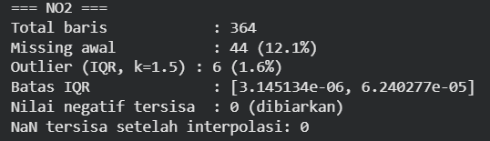
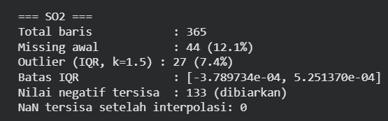

Data Understanding#
Mengenal Data Sebelum Bicara Kesimpulan#
Sebelum masuk ke analisis lebih jauh, penting untuk benar-benar memahami data yang kita miliki — dari mana asalnya, apa arti tiap kolomnya, dan apakah ada hal yang perlu diwaspadai. Pada studi kasus ini, fokus utama adalah pada tiga jenis polutan udara di wilayah Kecamatan Bandung, Kabupaten Jombang, yaitu CO, SO₂, dan NO₂.
1. Sumber Data#
Aspek |
Keterangan |
|---|---|
Sumber |
Satelit Sentinel-5P (program Copernicus) |
Platform akses |
OpenEO ( |
Wilayah |
Kecamatan Bandung, Kabupaten Jombang |
Rentang waktu |
2025-08-30 s.d. 2026-08-29 |
Resolusi spasial |
Data grid harian hasil pengambilan citra satelit |
Format file mentah |
NetCDF ( |
2. Apa Itu NO₂, CO, dan SO₂?#
CO — Karbon Monoksida#
CO adalah gas yang dihasilkan dari pembakaran tidak sempurna, seperti kendaraan bermotor, pembakaran sampah, dan aktivitas rumah tangga. Gas ini berbahaya karena dapat menghambat pengangkutan oksigen dalam tubuh.
Dampak: Mengganggu sistem pernapasan, menurunkan kapasitas kerja fisik, dan berisiko membahayakan kesehatan jika konsentrasinya tinggi dalam waktu lama.
SO₂ — Sulfur Dioksida#
SO₂ biasanya berasal dari pembakaran bahan bakar fosil yang mengandung sulfur, seperti batu bara dan minyak bumi. Polutan ini banyak terkait dengan aktivitas industri dan pembangkit tenaga.
Dampak: Mengiritasi saluran pernapasan, memperburuk kualitas udara, serta berkontribusi pada hujan asam.
NO₂ — Nitrogen Dioksida#
NO₂ diproduksi terutama dari pembakaran bahan bakar kendaraan dan aktivitas industri. Gas ini merupakan indikator kuat dari polusi kendaraan dan emisi pembakaran.
Dampak: Mengiritasi saluran pernapasan, memperburuk kondisi asma, serta berperan dalam pembentukan ozon permukaan.
3. Dokumentasi Visual — Eksplorasi Awal dan Deteksi Outlier#
Sebelum masuk ke tahapan preprocessing yang lebih rapi, perlu dilakukan eksplorasi visual awal untuk melihat pola data mentah dan mengidentifikasi adanya nilai ekstrem atau outlier.
3.1 Visualisasi Outlier dan Missing Values per Polutan#
Berikut adalah visualisasi yang menunjukkan keberadaan outlier dan missing values pada data setiap polutan di wilayah Kecamatan Bandung. Gambar-gambar ini bukan grafik time series biasa, melainkan representasi dari titik data yang menyimpang dan data yang hilang sebelum dilakukan pembersihan.

CO — Karbon Monoksida#

Pada data CO, terdapat beberapa titik yang terdeteksi sebagai outlier karena nilainya menyimpang dari pola umum. Titik-titik ini kemudian diubah menjadi missing values agar proses imputasi dapat dilakukan dengan lebih terkontrol.
NO₂ — Nitrogen Dioksida#

Pada data NO₂, visualisasi ini memperlihatkan posisi titik yang secara statistik masuk kategori outlier dibandingkan data normal. Adanya missing values juga menjadi indikator bahwa data perlu dibersihkan sebelum analisis lanjutan.
SO₂ — Sulfur Dioksida#

Pada data SO₂, pola outlier lebih terlihat jelas karena data menunjukkan lonjakan ekstrem dan beberapa nilai yang tidak realistis secara fisik, seperti nilai negatif. Kondisi ini mengindikasikan bahwa proses pembersihan data harus dilakukan secara hati-hati agar hasil analisis tidak bias.